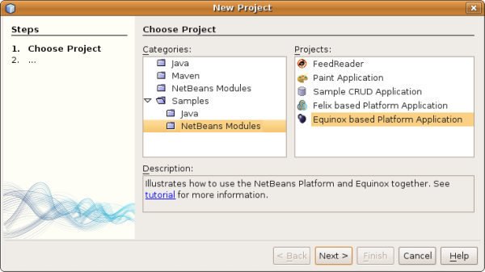

Apache NetBeans
Apache NetBeansLatest release
NetBeans Platform Quick Start Using OSGi
| This tutorial needs a review. You can edit it in GitHub following these contribution guidelines. |
This document is a quick demonstration of how to integrate OSGi bundles in a NetBeans Platform application.
The focus of the tutorial is a "hello world" scenario based on the Sudoku Game by Peter Kriens. You import the OSGi bundles constituting the Sudoku Game, together with the related required Equinox bundles. When the application is deployed, the following application is available in the web browser:
Once you have gone through this simple scenario, more useful scenarios are listed in the Further Reading section at the end of this tutorial.
| You do not need to download a separate version of the NetBeans Platform to develop applications for the NetBeans Platform. Typically, you develop the applications and modules in the NetBeans IDE and then only include the modules that are necessary to run the NetBeans Platform and your application. |
Setting Up the Environment
Aside from downloading the software listed above, you need to take some steps to prepare your environment, as described below.
-
Create a new folder in your filesystem on disk.
-
From the Equinox distribution, put the following into the folder:
-
javax.servlet_xxx.jar
-
org.eclipse.equinox.ds_xxx.jar
-
org.eclipse.equinox.http_xxx.jar
-
org.eclipse.equinox.util_xxx.jar
-
org.eclipse.osgi.services_xxx.jar
-
org.eclipse.osgi_xxx.jar
-
-
Put the two Sudoku JARs into the folder, where the JARs above are found:
-
aQute.sudoku.jar
-
aQute.webrpc.jar
-
Now you have the OSGi bundles you will import available in a centralized location, from where you will integrate them into your application.
Creating the Application
Once you have all the required OSGi bundles available, create your new NetBeans Platform application, as described below.
-
Choose File | New Project and choose to create a NetBeans Platform application atop Equinox, via the Equinox template:

Click Next.
-
Specify a name for the application, as shown below.

Click Finish.
-
You can run the application that results from the above template, you’ll see an application containing a window, displaying all the NetBeans modules and OSGi bundles that make up your application.
Importing the OSGi Bundles
Aside from downloading the software listed above, you need to take some steps to prepare your environment, as described below.
-
Right-click the application in the Projects window, choose Properties, go to the Libraries tab, click "Add Cluster" and then browse to the folder where the above JARs are found. Then a wizard opens that lets you convert the JARs to a 'cluster', i.e., a set of related modules/bundles that will be incorporated into your application:
-
As shown above, set all imported OSGi bundles to "Enabled", so that they will be loaded and available at the time the application starts.
-
When you click Finish, the "platform.properties" configuration file will have been updated. It should look something like this:
cluster.path.extra=netbinox:\../../path/to/my/nbsudokugame/folder
disabled.modules.extra=org.netbeans.libs.felix
cluster.path=\
${nbplatform.active.dir}/harness:\
${nbplatform.active.dir}/platform:\
${cluster.path.extra}
disabled.modules=\
org.jdesktop.layout,\
org.netbeans.api.visual,\
org.netbeans.core.execution,\
org.netbeans.core.multiview,\
org.netbeans.insane,\
org.netbeans.libs.felix,\
org.netbeans.libs.jsr223,\
org.netbeans.modules.apisupport.harness,\
org.netbeans.modules.apisupport.tc.cobertura,\
org.netbeans.modules.autoupdate.services,\
org.netbeans.modules.autoupdate.ui,\
org.netbeans.modules.core.kit,\
org.netbeans.modules.favorites,\
org.netbeans.modules.jellytools.platform,\
org.netbeans.modules.jemmy,\
org.openide.compat,\
org.openide.execution,\
org.openide.options,\
org.openide.util.enumerations
nbplatform.active=default| The first line above points to the folder you created earlier. |
-
Then add this line to the "project.properties" configuration file of the application, which specifies that no splash screen will be shown and the port for deployment of the application:
run.args.extra=--nosplash -J-Dorg.osgi.service.http.port=8080Running the Application
The application is now ready to be deployed, as described below.
-
Run the application! All the OSGi bundles and NetBeans modules in your application will be deployed. The application for viewing the deployed OSGi bundles and NetBeans modules is deployed too, giving you a desktop application to monitor what is currently deployed, which is quite handy:
Alternatively, delete the whole module that provides the window above. Then remove all the modules that are required by the above window, i.e., remove the window system, actions system, and everything else… except for the few JARs required by the OSGi integration: bootstrap, startup, filesystems, module system, utilities, and lookup.
cluster.path.extra=netbinox:\../../path/to/my/nbsudokugame/folder
disabled.modules.extra=org.netbeans.libs.felix
cluster.path=\
${nbplatform.active.dir}/harness:\
${nbplatform.active.dir}/platform:\
${cluster.path.extra}
disabled.modules=\
org.jdesktop.layout,\
org.netbeans.api.annotations.common,\
org.netbeans.api.progress,\
org.netbeans.api.visual,\
org.netbeans.core,\
org.netbeans.core.execution,\
org.netbeans.core.io.ui,\
org.netbeans.core.multiview,\
org.netbeans.core.nativeaccess,\
org.netbeans.core.output2,\
org.netbeans.core.ui,\
org.netbeans.core.windows,\
org.netbeans.insane,\
org.netbeans.libs.felix,\
org.netbeans.libs.jna,\
org.netbeans.libs.jsr223,\
org.netbeans.libs.junit4,\
org.netbeans.modules.apisupport.harness,\
org.netbeans.modules.apisupport.tc.cobertura,\
org.netbeans.modules.applemenu,\
org.netbeans.modules.autoupdate.services,\
org.netbeans.modules.autoupdate.ui,\
org.netbeans.modules.core.kit,\
org.netbeans.modules.editor.mimelookup,\
org.netbeans.modules.editor.mimelookup.impl,\
org.netbeans.modules.favorites,\
org.netbeans.modules.javahelp,\
org.netbeans.modules.jellytools.platform,\
org.netbeans.modules.jemmy,\
org.netbeans.modules.keyring,\
org.netbeans.modules.masterfs,\
org.netbeans.modules.nbjunit,\
org.netbeans.modules.options.api,\
org.netbeans.modules.options.keymap,\
org.netbeans.modules.print,\
org.netbeans.modules.progress.ui,\
org.netbeans.modules.queries,\
org.netbeans.modules.sendopts,\
org.netbeans.modules.settings,\
org.netbeans.modules.spi.actions,\
org.netbeans.spi.quicksearch,\
org.netbeans.swing.outline,\
org.netbeans.swing.plaf,\
org.netbeans.swing.tabcontrol,\
org.openide.actions,\
org.openide.awt,\
org.openide.compat,\
org.openide.dialogs,\
org.openide.execution,\
org.openide.explorer,\
org.openide.io,\
org.openide.loaders,\
org.openide.nodes,\
org.openide.options,\
org.openide.text,\
org.openide.util.enumerations,\
org.openide.windows
nbplatform.active=defaultThen you will have a non-GUI application, i.e., a server application, well suited for modular web development.
-
Now put this URL in the browser (optionally, use URLDisplayer.getDefault() from the NetBeans UI Utilities API to open the browser at the required location programmatically) and the "index.html" defined within the Sudoku Game is deployed, displayed in the browser, and you can start playing the Suduko Game:
http://localhost:8080/rpc/sudoku/index.htmlCongratulations, you have integrated your first OSGi bundles into a NetBeans Platform application.
Further Reading
Now that you have completed the tutorial and understand the steps to take when you want to reuse an OSGi bundle in your NetBeans Platform application, take a look at these related documents and more advanced scenarios:
-
Toni Epple’s OSGi/NetBeans blog entry and presentation
-
Gunnar Reinseth’s NetBeans-EMF integration ( part 1, part 2)
-
Also read New Cool Tools for OSGi Developers